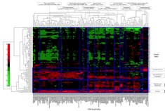
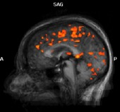
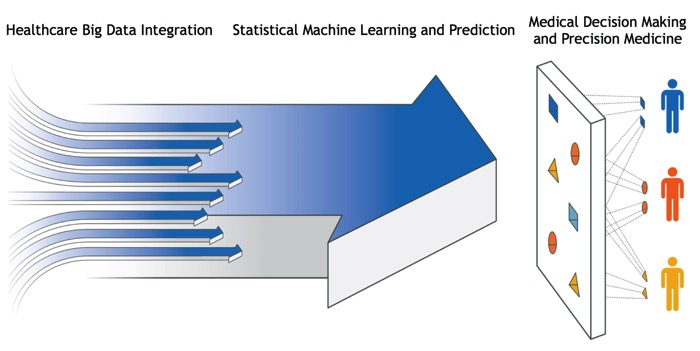

- Integration, mining, and inferences for healthcare big data
- Predictive modeling with high-dimensional variables in lung cancer early detection
- Brain atlas for mapping connectivity in focal epilepsy
- Latent variable and measurement error models
- Bayesian Inference with Gaussian Markov Random Field Models
Our Team Members and Collaborators:
Xiaozhen Han, M.S., Cleveland Clinic
Manshi Li, M.S., Cleveland Clinic
Ethan Yifan Xu, Ph.D., IBM Watson Health
Peter Mazzone, M.D., Cleveland Clinic
Umur Hatipoglu, M.D., Cleveland Clinic
Qing Kenneth Wang, Ph.D., M.B.A., Cleveland Clinic
John C. Mosher, Ph.D., Cleveland Clinic
Lara Jehi, M.D., Cleveland Clinic
Ela Plow, Ph.D., Cleveland Clinic
Guang Yue, Ph.D., Kessler Foundation and Rutgers University New Jersey Medical School
Statistical Learning-based Models in Medicine

Healthcare Predictive Analytics
